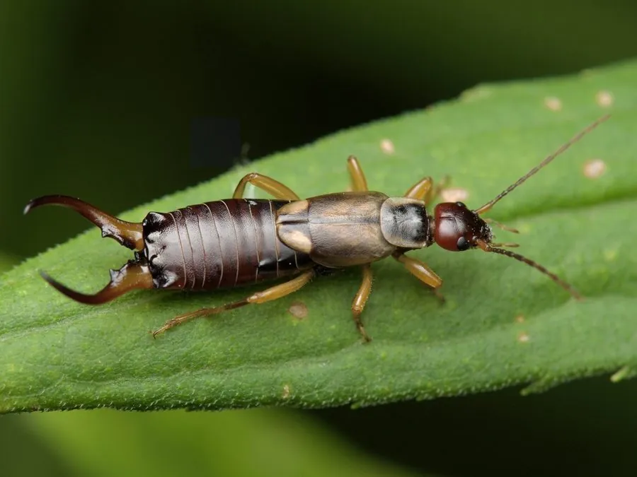

昆虫 · 动物界
欧洲蠼螋 Forficula auricularia

欧洲常见的蠼螋，尾部有一对弯形尾铗，喜欢躲在潮湿缝隙中，雌虫会守在卵旁照料，是少见的护幼昆虫。
- 分类
- 门节肢动物门纲昆虫纲目革翅目科蠼螋科属蠼螋属
- 栖息环境
- 潮湿的石缝、落叶层、树皮下、花盆底与房屋角落
- 地理分布
- 原产欧洲；被引入北美等地，全球温带地区有分布
- 保护级别
- IUCN 暂无评估；非中国原产，在中国无保护级别
物种志
欧洲蠼螋体长 1.2–2 厘米（含尾铗），身体细长扁平，呈红褐色或深褐色，头部有细长的丝状触角，前翅很短、后翅膜质折叠在下面，多数个体不常飞行；腹部末端有一对特征性的尾铗，雄虫的尾铗较弯且更粗壮，雌虫较直。
它原产于欧洲，现已随人类活动扩散到北美和世界许多地区，栖息于潮湿的石缝、落叶层、花盆底部和树皮下，夜间活动，食性杂，取食蚜虫、小型昆虫、花粉、果实和腐殖质。雌虫有护幼行为：它会在土室中产下 40–60 枚卵，守在卵旁清理霉菌，幼虫孵化后还会继续照料一段时间，这在昆虫中比较少见。欧洲蠼螋对人无害，尾铗主要用于威吓和捕捉猎物，不会钻入耳朵；民间“蠼螋会钻进人耳”的说法是误解。
形态与习性
- 食性杂食，蚜虫、小型昆虫、花粉、果实和腐殖质
- 体长1.2–2 cm（含尾铗）
- 寿命约 1 年
- 繁殖卵生，雌虫产卵 40–60 枚并护卵、照料幼虫
- 活动节律夜行性，白天藏在潮湿缝隙中
- 防御举起尾铗威吓，对人无害
趣味知识
- 欧洲蠼螋雌虫会守在卵旁照料，孵化后还会继续照顾幼虫。
- 尾部的尾铗主要用于威吓对手和捕捉猎物，并不会钻进人的耳朵。
- 它喜欢潮湿环境，常在花盆底部、石缝和落叶堆中被发现。